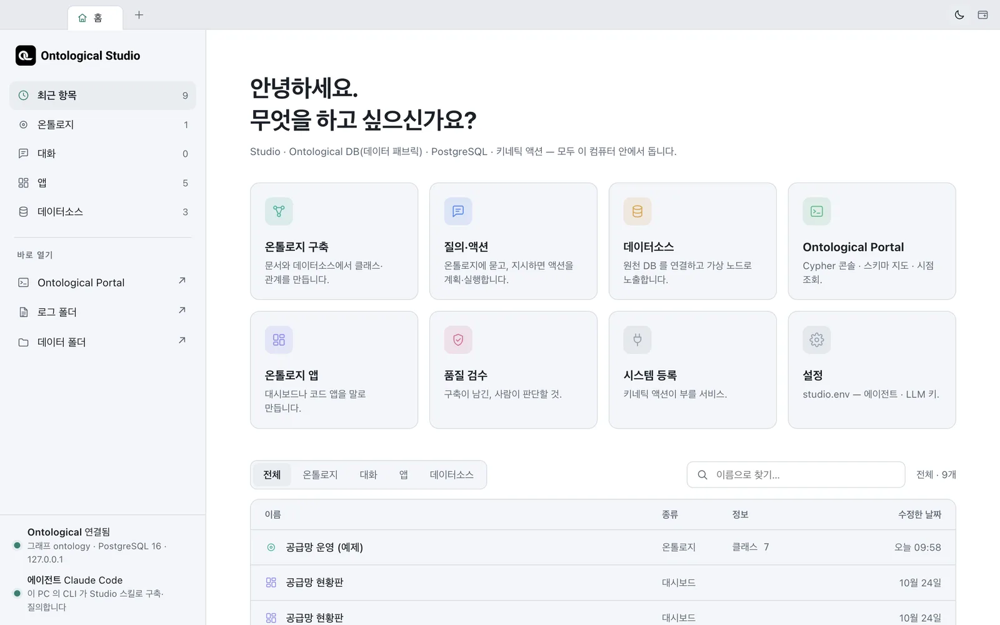

홈 화면의 여덟 카드가 무엇을 하는지, 탭과 창을 어떻게 다루는지 익힙니다. 앞으로 모든 장은 이 홈에서 출발합니다.
홈 — 무엇을 하고 싶으신가요?#

카드 하나가 기능 하나입니다. 카드를 누르면 새 탭으로 열립니다.
| 카드 | 하는 일 | 다루는 장 |
|---|---|---|
| 온톨로지 구축 | 문서·데이터소스·시스템을 근거로 에이전트가 클래스와 관계를 설계하고 채웁니다 | 11장~12장 |
| 질의·액션 | 온톨로지에 말로 묻고, 지시하면 액션을 계획·승인·실행합니다 | 13장, 16장 |
| 데이터소스 | 원천 DB를 연결하고 테이블을 가상 노드로 노출합니다 | 5장~6장 |
| Ontological Portal | Cypher 콘솔, 스키마 지도, 시간 여행 | 7장~10장 |
| 온톨로지 앱 | 대시보드나 코드 앱을 말로 만듭니다 | 17장~20장 |
| 품질 검수 | 구축이 남긴, 사람이 판단할 항목을 확인합니다 | 12장 |
| 시스템 등록 | 액션이 호출할 업무 시스템(마이크로서비스)을 등록합니다 | 14장 |
| 설정 | studio.env — 에이전트와 LLM 키 |
1장 |
아래쪽 최근 항목 표에는 온톨로지·대화·앱·데이터소스가 섞여 나옵니다. 행을 누르면 그 대상이 바로 열립니다. 위의 「전체 · 온톨로지 · 대화 · 앱 · 데이터소스」로 거르고, 오른쪽 칸으로 이름을 찾습니다.
탭과 창#
- 탭 줄이 창의 제목 표시줄입니다. 첫 탭은 언제나 홈입니다.
- 각 탭은 서로 독립적이라, 구축 탭에서 에이전트가 일하는 동안 포털 탭에서 질의를 해 볼 수 있습니다.
- 탭을 오른쪽 클릭하고 「새 창으로 분리」를 고르면 다른 창으로 떼어 낼 수 있습니다. 화면이 두 개라면 편리합니다.
| 단축키 (Windows는 ⌘ 대신 Ctrl) | 동작 |
|---|---|
| ⌘T | 홈 탭으로 |
| ⌘W | 탭 닫기 |
| ⌘1 · ⌘2~8 · ⌘9 | 홈 · n번째 탭 · 마지막 탭 |
| ⌃Tab / ⌃⇧Tab | 다음 / 이전 탭 |
| ⌘R | 탭 새로 고침 |
| ⌘N | 새 창 |
낮과 밤#
탭 줄 오른쪽의 해/달 버튼으로 테마를 바꿉니다. 열린 모든 탭과 대시보드·코드 앱이 함께 바뀝니다. 포털은 원래 밤 테마 전용이라 낮 테마에서도 어둡게 보입니다.
왼쪽 레일#
Studio 탭 안의 왼쪽 세로 줄(레일)에도 같은 기능들이 아이콘으로 있습니다. 한 탭 안에서 화면을 바꿀 때는 레일을, 나란히 띄우고 싶을 때는 홈의 카드를 쓰면 됩니다.
확인 문제
- 홈에서 「데이터소스」 카드와 「Ontological Portal」 카드를 차례로 눌러 탭 두 개를 여세요.
- 포털 탭을 새 창으로 분리했다가, 창을 닫아 보세요.
- 테마를 밤으로 바꾸고, 열린 탭이 모두 함께 바뀌는지 확인하세요.
도움말
창을 닫으면 그 안의 탭도 닫히지만, 앱의 데이터는 그대로 남습니다. 홈 탭에서 ⌘W를 누르면 창 전체가 닫히고, 창을 모두 닫으면 앱이 종료됩니다.